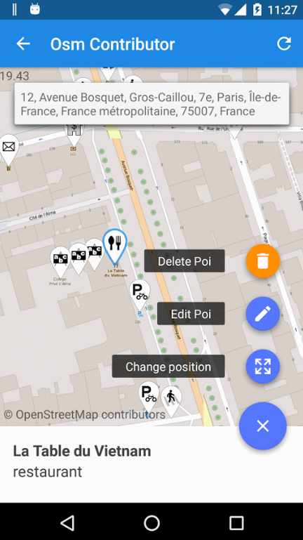
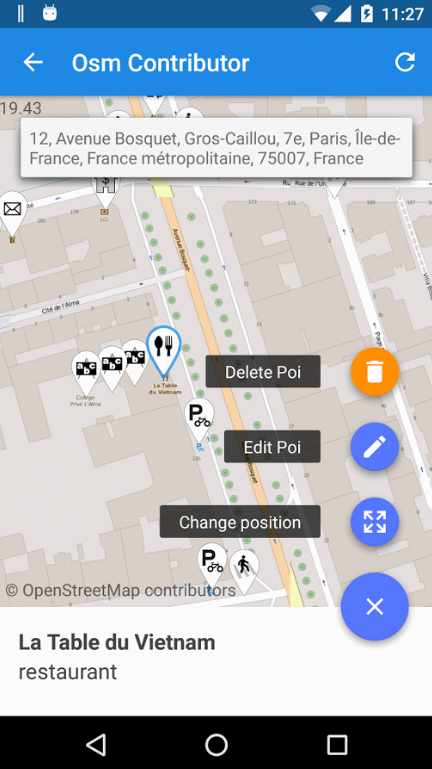

Parlez-Vous Android?
Formation avancée

By Excilys
Sommaire
- Introduction
- Environnement
- L'Archytecture
- Les layouts
- Activity et vue
- Thread, réseau et web services
- Les listes
- Les images
Introduction
Les apps android d'Excilys
- OSM contributor
- SDK transilien
- La Poste
- Open cyclo
- Event tribe
- Capico
- Glizzer
 

Une idée des chiffres ?


Et pour les sous?


L'objectif du cours
todo add images of the appEnvironnement
Les écrans


Les versions


Data et baterie


Comment ca marche ?

JVM vs DALVIK ?

Next fight : ART vs DALVIK

L'Architecture
Création de votre première App
- Android Studio: http://developer.android.com/tools/sdk
- La documentation officielle: http://developer.android.com


Le manifest
Les Layouts
WYSIWYG

Linear layout


Relative layout

Les mots clés incontournables
- Margin
- Padding
- layout_below / layout_above
- layout_toEndOf / layout_toStartOf
- layout_centerHorizontal / layout_centerVertical
- layout_centerInParent
A vous de jouer
Le but de cette exercice est de vous faire travailler avec les layouts pour obtenir une vue finale qui ressemble à la capture ci-contre, soit un formulaire avec 2 champs et des contrôles en bas de l'écran. Cet écran représente le formulaire de connexion de notre application.
Indications:
TextView permet d'afficher un texte
EditText permet d'afficher un champ de saisie
ScrollView permet d'avoir un contenu scrollable
Button permet d'afficher un bouton
Une bonne façon de commencer est de mettre en place des layouts avec des couleurs de fond différentes pour s'assurer que tout est bien à sa place et réagit correctement au changement d'orientation.
Pour changer la couleur de fond d'un élément :
android:background="#ttrrggbb"
tt : alant de 00 à FF pour la transparence

Bonus
Créez un nouveau projet et en utilisant simplement un RelativeLayout et des TextViews, essayez de reproduire l’exemple. Le résultat devrait être comme ci-contre.

Activity et vue
Ouvrir une activité

Intent intent = new Intent(this, DisplayMessagesActivity.class);
intent.putExtra(EXTRA_MESSAGE,
message);
startActivity(intent);
Backstack

Backstack

Life cycle

Cycle de vie d'une activity
Le but de cet exercice est de comprendre ce que devient une Activity lors de différents évènements. Pour cela, vous allez utiliser l’API de log d’Android.
Log.i(TAG, "onCreate!");
Une pratique courante est de déclarer une constante TAG dans la classe.
public class ParlezVousActivity extends Activity {
private final String TAG = ParlezVousActivity.class.getSimpleName();
Redéfinissez les méthodes suivantes et ajoutez-y un Log explicite : onCreate, onDestroy, onPause, onResume, onSaveInstanceState, onRestoreInstanceState Observez ce qui arrive lorsque : L’application se lance Vous changez l’orientation du téléphone (Ctrl+F11 sur l’émulateur) Vous fermez l’application
Interactions utilisateurs
Le but de cet exercice est d’écouter et de manipuler la vue depuis l’Activity. On poursuit avec notre application. Dans la méthode onCreate de l’Activity, récupérez les élements de la vue que vous allez manipuler en utilisant findViewById :
Log.i(TAG, "onCreate!");
private EditText usernameField;
@Override
protected void onCreate(Bundle savedInstanceState) {
super.onCreate(savedInstanceState);
setContentView(R.layout.activity_main);
usernameField = (EditText) findViewById(R.id.username_field);
Ajoutez un listener sur l’évènement onClick des boutons, qui peut être au choix : l’Activity, une classe anonyme, ou une classe externe. Implémentez le bouton "Vider" en supprimant le contenu des champs texte. Implémentez le bouton "Envoyer" en affichant un Toast.
Toast.makeText(this, "Toast !", Toast.LENGTH_SHORT).show();
Bonus
Ajoutez une phase de validation du formulaire au moment de l’envoi qui vérifiera que les champs ne soient pas vides. Pour cela, ajoutez dans une TextView ayant gone comme visibility. La méthode si dessous vous permettra de rendre visible ce message d’erreur.
setVisibility(View.VISIBLE);
Let's do it clean
Loading views like this and using listeners for click events archaiq and quite a pain. There is a cool librairie developed by Jake Wharton that you should use.
Butter Knife

Thread, Réseau, WebServices
UI-Thread
Seul l’UIThread peut modifier la vue.C’est l’UIThread qui traite les actions utilisateurs.
Que se passe-t-il lorsqu’on effectue un chargement long sur ce thread?
Asynctask

Comment on code ca ?
private class DownloadFilesTask extends AsyncTask<URL, Integer, Long> {
protected Long doInBackground(URL... urls) {
int count = urls.length;
long totalSize = 0;
for (int i = 0; i < count; i++) {
totalSize += Downloader.downloadFile(urls[i]);
publishProgress((int) ((i / (float) count) * 100));
// Escape early if cancel() is called
if (isCancelled()) break;
}
return totalSize;
}
protected void onProgressUpdate(Integer... progress) {
setProgressPercent(progress[0]);
}
protected void onPostExecute(Long result) {
showDialog("Downloaded " + result + " bytes");
}
}
Lancer l'asynctask avec :
new DownloadFilesTask().execute(url1, url2, url3);
Les params
Les trois types de parametres utilisé par l'async task sont : Params,le type envoyé lors de l'execution.Progress, le typme envoyé lors de la progression.
Result, le type du resultat de l'asynctask.
Les params ne sont pas toujours utilisé, vous pouvez utilisez Void dans ces cas.
private class MyTask extends AsyncTask<Void, Void, Void> { ... }
Appel réseau
URL url = new URL("http://www.android.com/");
HttpURLConnection urlConnection = (HttpURLConnection) url.openConnection();
try {
InputStream in = new BufferedInputStream(urlConnection.getInputStream());
readStream(in);
} finally {
urlConnection.disconnect();
}
On se connecte ?
Le but de cet exercice est d'envoyer un formulaire à un web service REST.
La première chose à faire est d’ajouter l’autorisation à l’application pour utiliser internet. Pour
cela, dans le fichier AndroidManifest.xml :
<uses-permission android:name="android.permission.INTERNET" />
Créez une classe loginTask qui étend android.os.AsyncTask.
Dans la méthode onPreExecute, affichez une roue de chargement.
Dans la méthode onPostExecute, rendez cette roue invisible.
Dans la méthode doInBackground, récupérer le username et le password.
Faites votre appel au web service dans la méthode doInBackground.
L'URL qui doit être appelée est :
http://training.loicortola.com/parlez-vous-android/register/[username]/[password]
La méthode HTTP à utiliser est GET
La réponse à cette requête est la chaîne de caractères « true » si la combinaison username/password
correspond à un utilisateur inscrit et "false" dans le cas contraire.
Appel réseau avec Retrofit
compile 'com.squareup.retrofit2:retrofit:2.1.0'
public interface GitHubService {
@GET("users/{user}/repos")
Call<List<Repo>> listRepos(@Path("user") String user);
}
Retrofit retrofit = new Retrofit.Builder()
.baseUrl("https://api.github.com/")
.build();
GitHubService service = retrofit.create(GitHubService.class);
Call<List<Repo>> repos = service.listRepos("octocat");
La même en mieux ?
Il s'agit a present de refaire cette appel de login avec retrofit. Retirer l'async task et utiliser la methode onResponse du callback.Les listes
Les listes

Le RecyclerView
<android.support.v7.widget.RecyclerView
android:id="@+id/my_recycler_view"
android:scrollbars="vertical"
android:layout_width="match_parent"
android:layout_height="match_parent"/>
// use this setting to improve performance if you know that changes
// in content do not change the layout size of the RecyclerView
mRecyclerView.setHasFixedSize(true);
// use a linear layout manager
mLayoutManager = new LinearLayoutManager(this);
mRecyclerView.setLayoutManager(mLayoutManager);
// specify an adapter
mAdapter = new MyAdapter(myDataset);
mRecyclerView.setAdapter(mAdapter);
L'adapter
public class MyAdapter extends RecyclerView.Adapter<MyAdapter.ViewHolder> {
private String[] dataset;
// Provide a reference to the views for each data item
public static class ViewHolder extends RecyclerView.ViewHolder {
public TextView textView;
public ViewHolder(View v) {
super(v);
textView = vfindViewById(R.id.mytv);
}
}
// Provide a suitable constructor (depends on the kind of dataset)
public MyAdapter(String[] dataset) {
this.dataset = dataset;
}
// Create new views (invoked by the layout manager)
@Override
public MyAdapter.ViewHolder onCreateViewHolder(ViewGroup parent,
int viewType) {
// create a new view
View v = LayoutInflater.from(parent.getContext())
.inflate(R.layout.my_text_view, parent, false);
return new ViewHolder(v);
}
// Replace the contents of a view (invoked by the layout manager)
@Override
public void onBindViewHolder(ViewHolder holder, int position) {
// - get element from your dataset at this position
// - replace the contents of the view with that element
holder.mTextView.setText(mDataset[position]);
}
// Return the size of your dataset (invoked by the layout manager)
@Override
public int getItemCount() {
return mDataset.length;
}
}
Recupérer les messages
Infinite scroll
Implementez un infinite scroll pour charger les messages.

public abstract class EndlessRecyclerViewScrollListener extends RecyclerView.OnScrollListener
Les images
Picasso Glide
repositories {
mavenCentral() // jcenter() works as well because it pulls from Maven Central
}
dependencies {
compile 'com.github.bumptech.glide:glide:3.7.0'
compile 'com.android.support:support-v4:19.1.0'
}
Glide.with(this).load("http://goo.gl/gEgYUd").into(imageView);